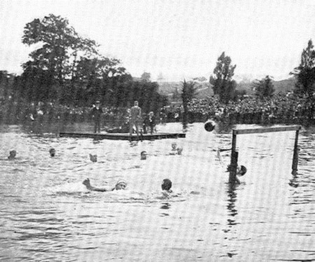
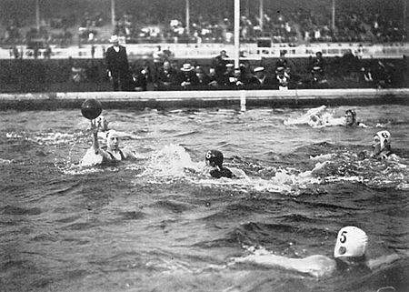
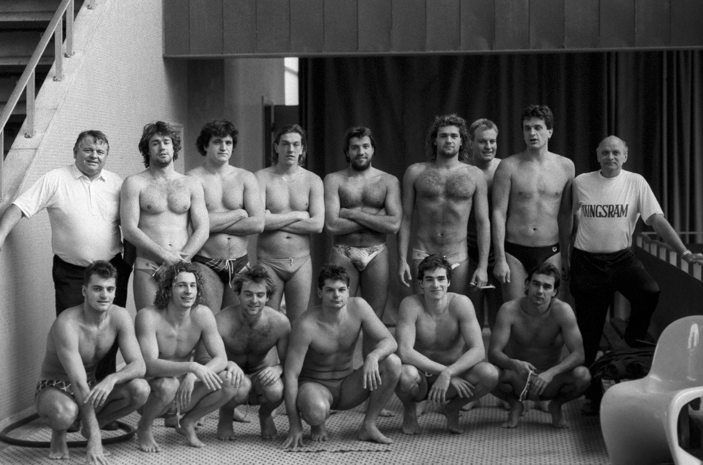
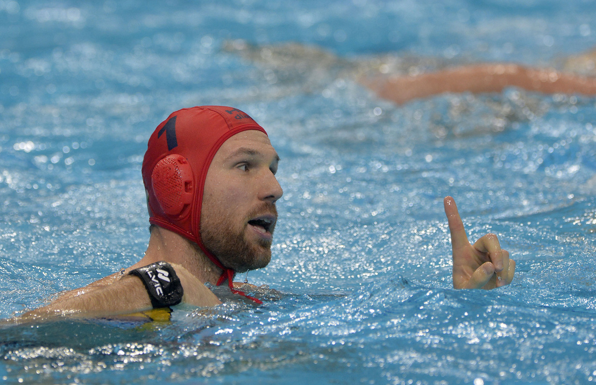
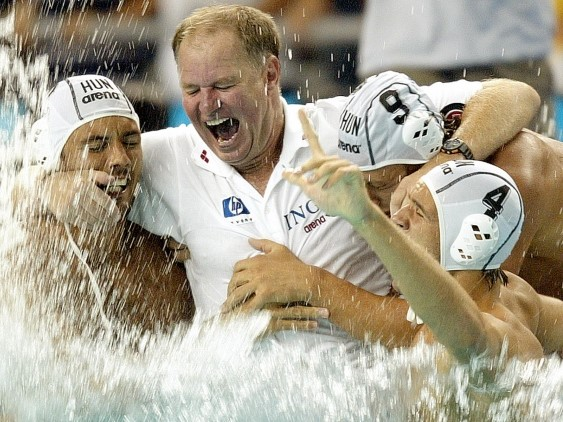
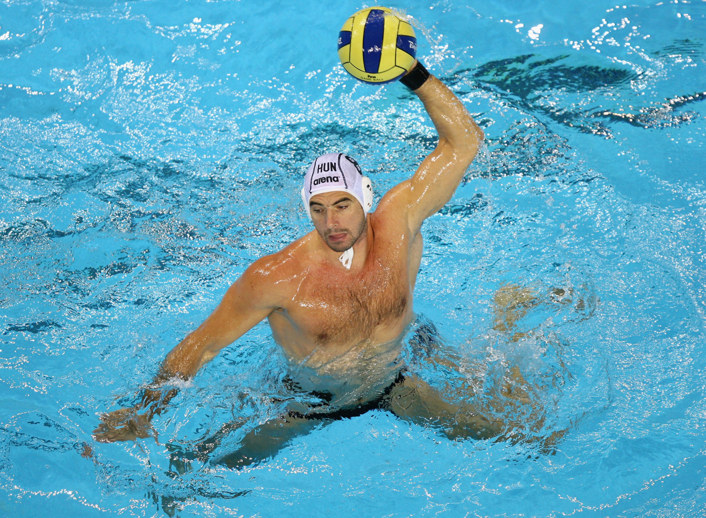

🤽Általánosságban a vízilabdáról🤽
A vízilabda avagy régebbi nevén vízipóló olyan labdajáték,
amelyet kettő 7-7 fős csapattal játszanak. A csapat 6 mezőnyjátékosból és 1 kapusból áll.
A játékidő négy negyedből áll, ahol a gól szerzés a cél.

Az általános forma amelybe a játékosok felállnak a patkó alakzat, mint ahogy a képen látszik.
A védekező játékosoknak célszerű, de nem kötelező a kapunak háttal és
a kapuhoz közelebb felfeküdve elhelyezkedniük.
A vízilabda összetett sportág, főleg a futball, az úszás, a kosárlabda, a röplabda, a jéglabda és a jégkorong elemeiből épül fel. Egy jó vízilabda-játékos erős, mint egy hokijátékos, pontosan dob, mint egy kosaras vagy röplabdás, kiváló az állóképessége, akár egy hosszútávúszónak, és remek a taktikai érzéke, akár egy sakkozónak.
A vízilabda összetett sportág, főleg a futball, az úszás, a kosárlabda, a röplabda, a jéglabda és a jégkorong elemeiből épül fel. Egy jó vízilabda-játékos erős, mint egy hokijátékos, pontosan dob, mint egy kosaras vagy röplabdás, kiváló az állóképessége, akár egy hosszútávúszónak, és remek a taktikai érzéke, akár egy sakkozónak.
Vízilabda története
A modern vízilabda alapjait William Wilson skót újságíró és úszóedző fektette le 1877-ben, mikor
úszótanoncainak kitalált és rögzített néhány alapszabályt egy általa vízifocinak nevezett csapatjátékhoz.
Az első vízilabda meccs a Dee folyó partján zajlott le. Bár nagyban eltért a mai változatától,
mégis akkora népszerűségre tett szert, hogy a brit úszószövetség 1885-ben Wilson szabálykönyvét
jelentősen kiegészítve, illetve némileg átírva, vízilabda néven önálló sportágnak ismerte el.
Ez a változat rövid idő alatt meghódította az egész világot.
Szabályok
- A játékban részt vevő csapatban a FINA által hozott szabály szerint összesen 13 játékos lehet, (Magyarországon 14) a medencében azonban egyszerre csak 7 játékos (6 mezőnyjátékos és a kapus).
- A hazai csapat általában fehér, a vendég csapat játékosai kék sapkában játszanak. A kapusok sapkája mindig piros
- Egy meccs 32 perc tiszta játékidő (ha a játék áll, az óra is) amit 4 db 8 perces negyedre osztanak. Az 1-2. és a 3-4. negyed között 2-2 perc szünet, a 2-3. negyed között vagyis a félidőben 5 perc a kötelező szünet.
- A csapatoknak 30 másodperce van arra, hogy támadjának, ha ez az idő lejár kapura lövés nélkül, automatikusan a másik csapat jön. A támadóidő újra indul 20 másodpercről, ha a támadó csapat a támadás után visszaszerzi a labdát (pl.kapufáról visszapattan), de kiállítás, sarokdobás vagy ötméteres kipattanójából is ugyan ez történik az idővel.
- A labdát bármilyen testrésszel meglehet érinteni. Összesen 2 tiltás van ezzel kapcsolatban. Két kézzel egyszerre, illetve ökölbe szorított kézzel tilos beleérni a labdába (kivéve a kapusokat az 5 méteres vonalon belül). Tehát ezen kívül mindegyik testrésszel történő gól érvényes, ha előtte nem előzte meg szabálytalanság.
- Gólt dobni akcióból bárhonnan lehet, iletve 5 méteren kívülről megítélt szabaddobásból közvetlenül lehet. Míg szögletből, oldaldobásból és 5 méteren belül megtélt szabaddobásból nem. Ezen esetekben, legalább egy csapattárs beleérése is szükséges. Az érvényes gólt kapott csapat középkezdésből indul.
- A gólvonaltól mért 5 méteres sávon belül elkövetett minden olyan szabálytalanságért büntető jár, amely közvetlen gólhelyzetet akadályozott meg. 5 méterest a pálya bármely részén elkövetett brutalitás miatt is ítélhet a játékvezető és végleg cserével kiküldheti a vétkes játékost. Ez esetben a támadó csapat egyik tagja a kapuval szemben, a pálya szélein jelölt 5 méteres vonal mentén helyezkedik el. Míg a mezőny többi tagja (kivéve a védekező csapat kapusát) ezen a vonalon kívül várakozik. A büntető dobást egyből el kell lőni, nem szabad a labdát lóbálni.
- A kiállított játékosoknak egy piros kötéllel körbe vett zónába kell úszniuk. A kötelet nem lehet lenyomni és csak úgy jöhetnek vissza ha átbújnak alatta. Akkor állhat vissza a játékba a kiállított játékos, ha a 20 másodperc tiszta játékidő eltelt és mutatják a bírók vagy a zsűriasztalról,hogy visszajöhet, vagy gól esik, vagy a saját csapata megszerzi a labdát, vagy a saját csapata javára szabaddobást, vagy kapuskidobást ítélnek.
Játékosok száma
Sapkák
Játékidő
Támadóidő
Labdaérintés
Gól
Büntető
Kiállítás




Nagy Viktor

Kemény Dénes

Benedek Tibor